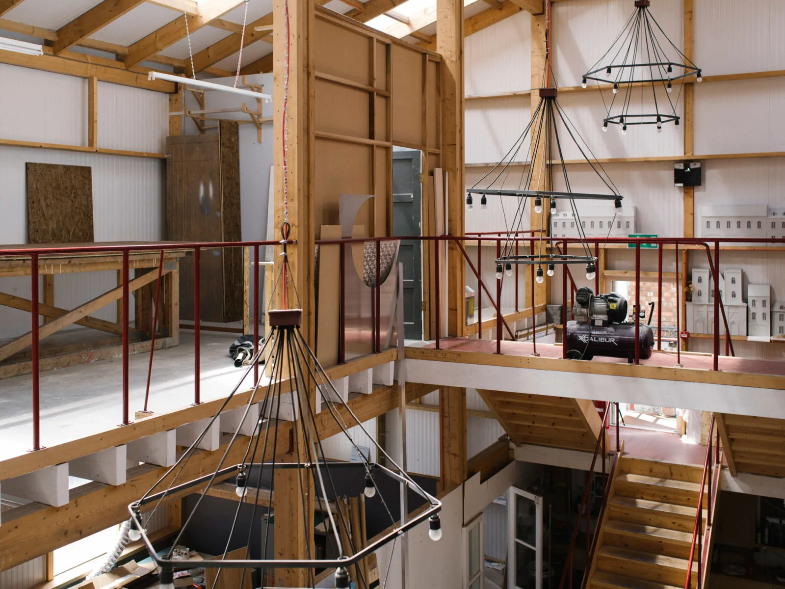
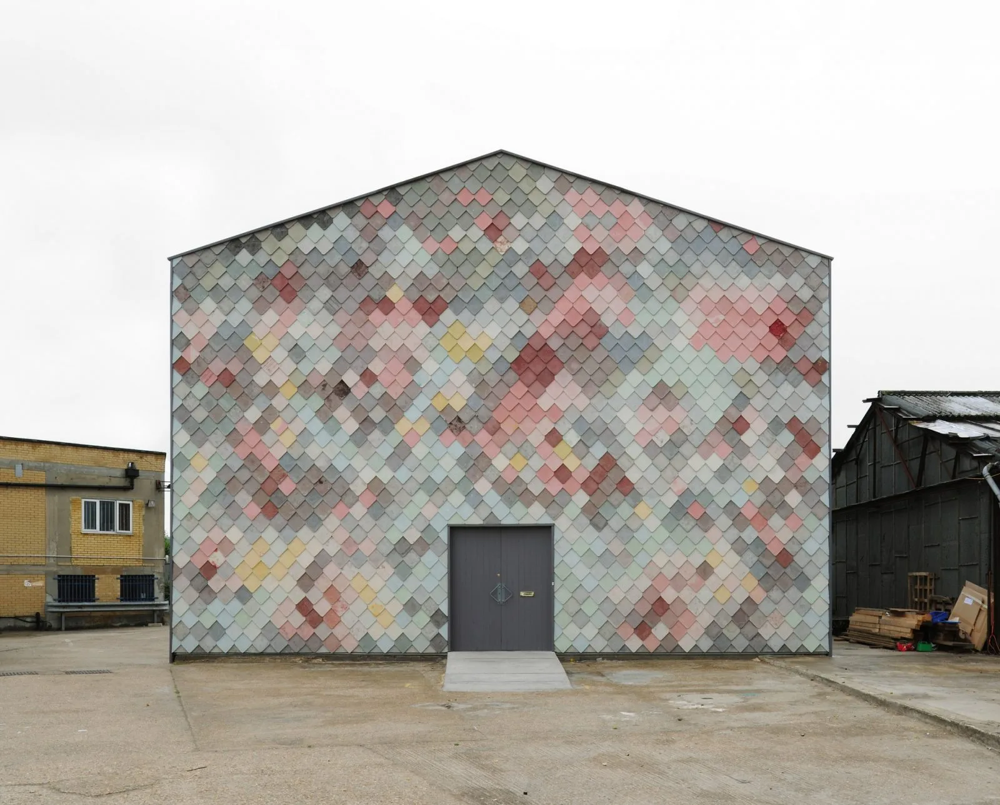
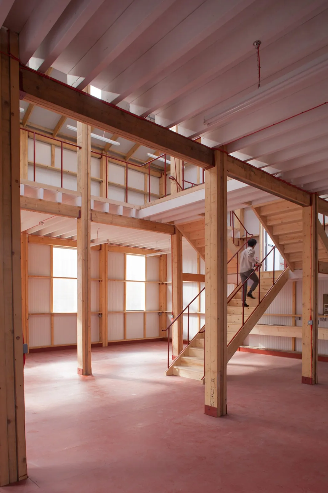
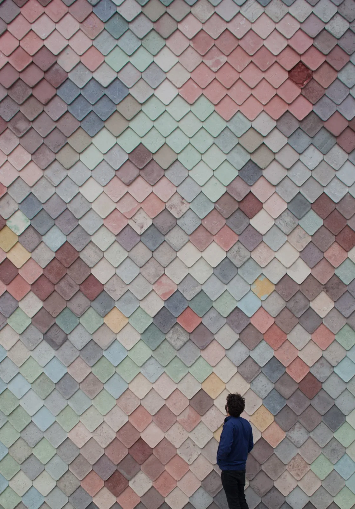
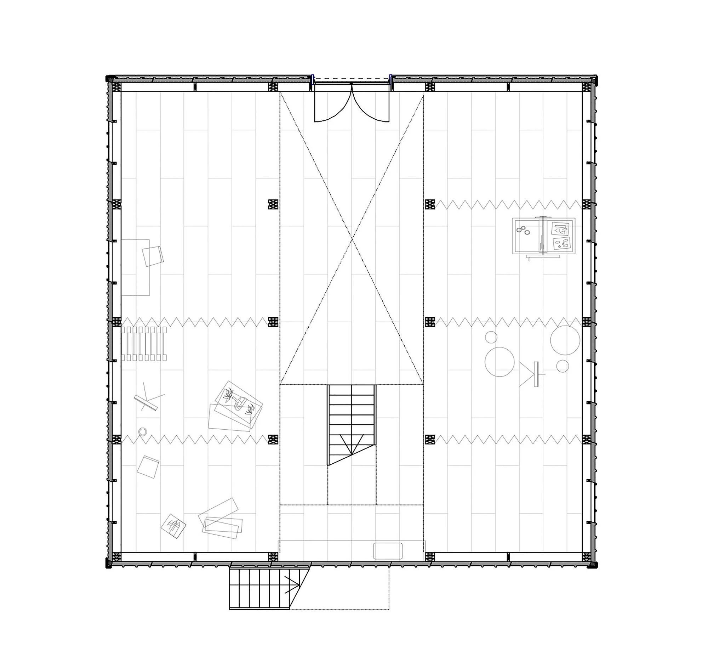
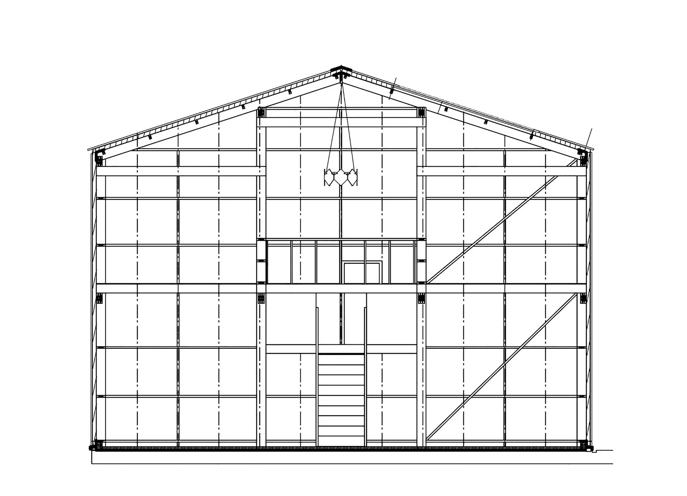

Workspace · 2014
Yardhouse
Assemble
London, UK
An affordable creative workspace with adaptable studio units arranged around a shared central bay.
A simple timber frame and prefabricated insulated panels allowed generous studio volumes with an economical construction. Handmade concrete tiles gave the public facade a distinct character, while tenants could adapt their own units.


Relevant connections
THINK
The studios and shared space accommodate independent creative work and discussion.
Images and drawings / 06









